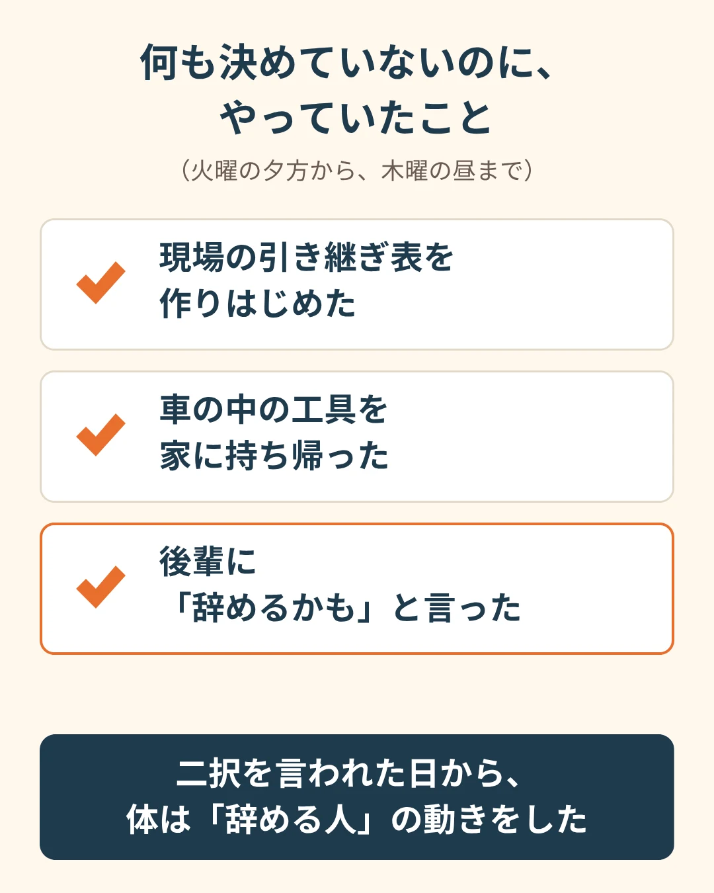
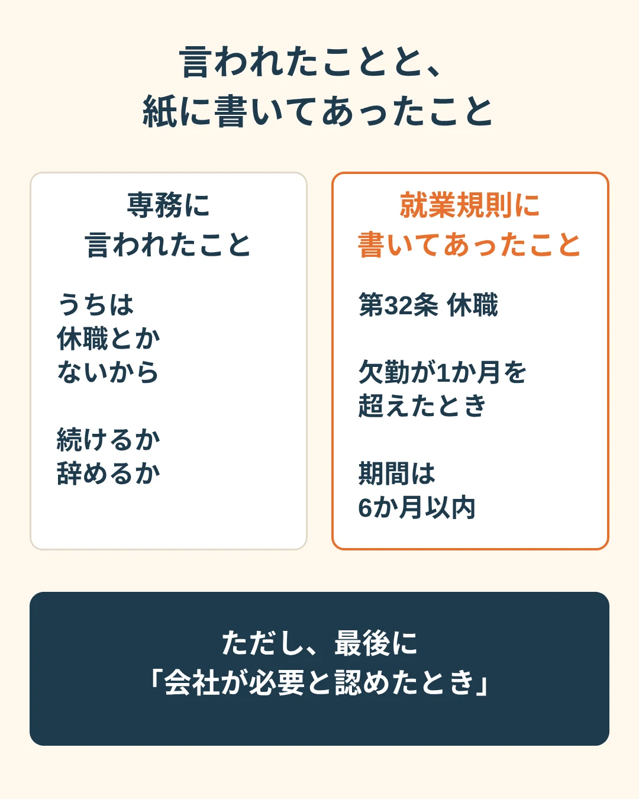
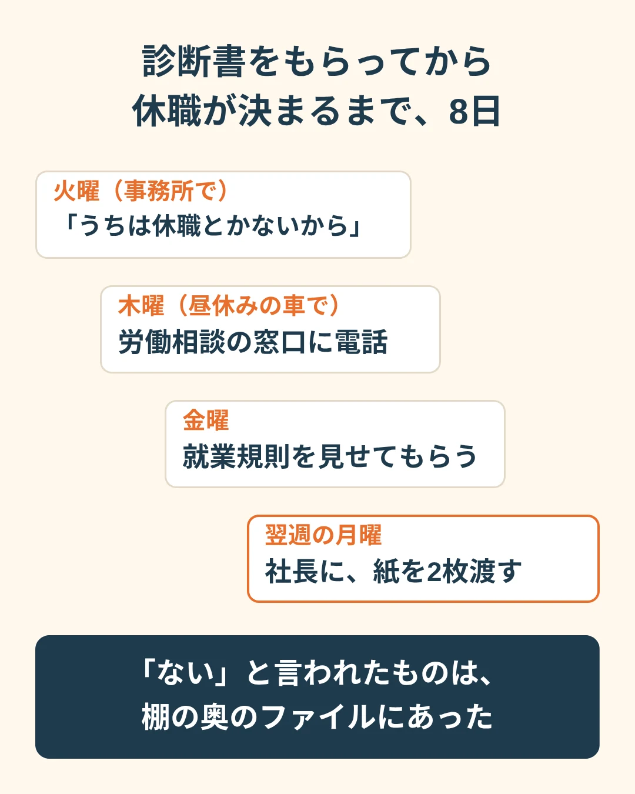
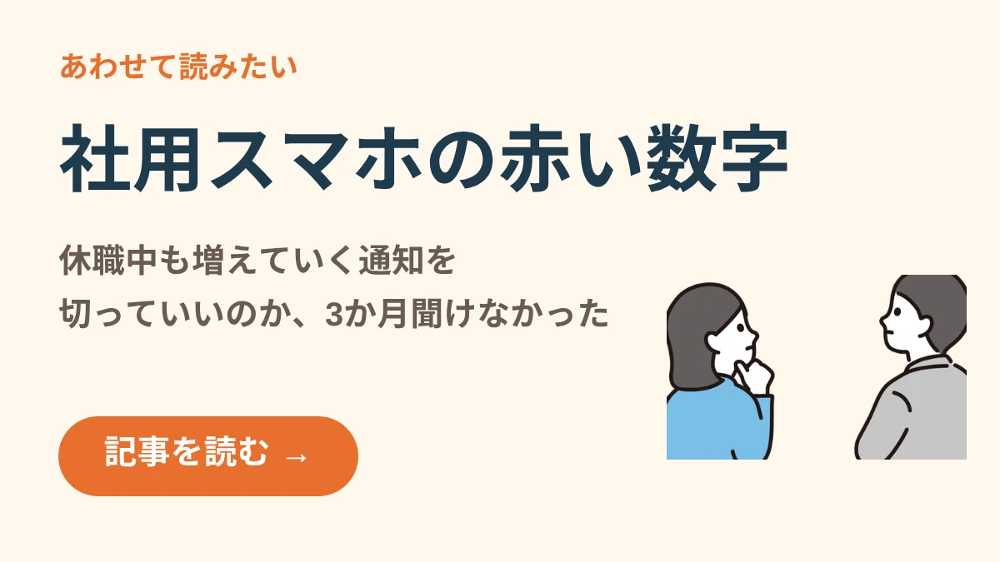
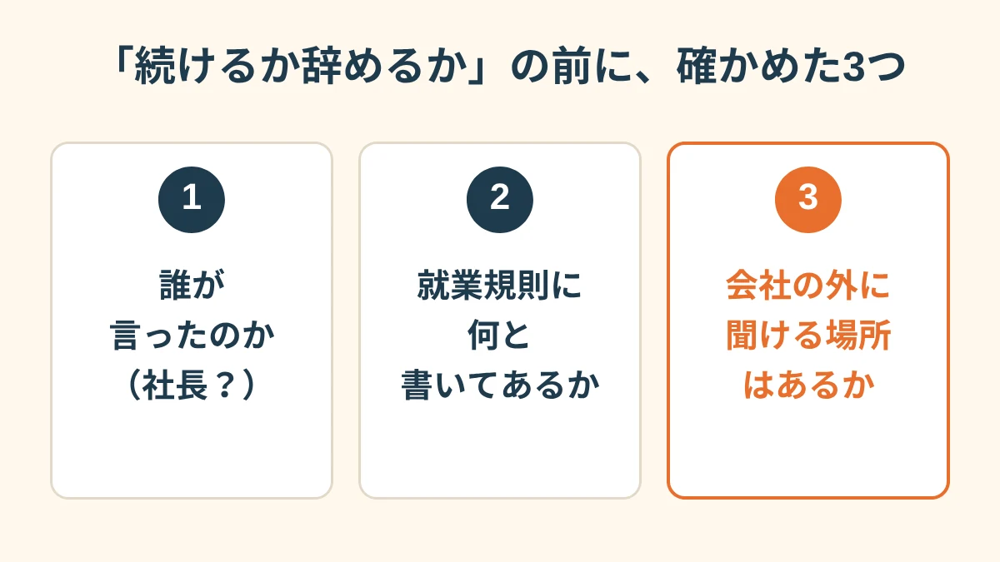

「体調のこと？ うちはね、休職とかないのよ」
専務は、パソコンの画面から目を離さないまま言った。
「前にもいたけど。続けるか、辞めるか、どっちかで考えてね」
鞄の中には、前の日にもらった診断書が入っていた。「2か月の休養を要する」。
僕は「……考えます」と言って、頭を下げた。下げる理由なんて、なかったのに。
「ちょっとご相談が」の、その先
29歳。住宅リフォームの会社で、現場管理をしている。
社員は18人。社長はほとんど現場に出ていて、事務所は社長の奥さんの専務が回している。見積もりも、経費精算も、有給の申請も、ぜんぶ専務の机を通る。
夏ごろから、夜に眠れなくなった。朝、現場に向かう車の中で、ハンドルを握る手が小さく震える。お施主さんからの電話が鳴ると、出る前に一回、深呼吸しないと声が出なかった。
9月の月曜日。半休を取って、心療内科に行った。適応障害、と言われた。先生は「まずは2か月、しっかり休みましょう」と言って、診断書を書いてくれた。
火曜の朝。社長に話すつもりで事務所に寄ったら、社長はもう現場に出ていた。
専務に「ちょっとご相談が……」と言いかけたところで、冒頭の一言。たぶん、僕の顔色を見て、先に分かったんだと思う。
診断書は、鞄から出さなかった。出せなかった、のほうが近い。「ない」と言われた制度のために、紙を出すのは、なんだか場違いな気がした。
「歯医者の受付を15年やってて。院長の奥さんに『うちは小さいから、長く休むなら一回辞めてもらって、よくなったらまた』って言われたんです。そのときは、やさしい言い方だなって思ったんですよ。辞めてから、あれ？ 戻れる約束、どこにもしてないなって。紙で残しておけばよかった、って、今でも思います」
何も決めていないのに、辞める準備をしていた
その日の夜、布団の中で「休職制度 ない 辞めるしかない」と打った。
出てくるのは、「1か月以上休むなら、辞めることになると思います」みたいな言葉ばかりだった。働けない人は雇えない。それは、そうなんだろうなと思った。
次の日から、自分でもよく分からない動きをした。

現場の引き継ぎ表を、エクセルで作りはじめた。担当している5軒ぶん、お施主さんの名前と、職人さんの段取りと、次に連絡する日。
営業車に積みっぱなしだった自分の工具を、家に持ち帰った。
後輩に「俺、辞めるかも」と言った。後輩は「え、マジすか。じゃあ、北町の現場どうなるんすか」と言った。心配されたのが現場のほうだったことに、ちょっとだけほっとした。自分でも、変だと思う。

昼休みの車から、電話を1本
木曜の昼。現場の近くのコンビニの駐車場で、エンジンを切った。
前の晩、「労働 相談 無料」で調べて出てきた番号を、スマホに残しておいた。総合労働相談コーナー。予約はいらない、と書いてあった。
出たのは、落ち着いた声の男の人だった。
「会社さんの個別のことは、こちらでは判断できないんですけどね」と前置きしてから、こう言った。
「休職の決まりがあるかどうかは、就業規則を見ないと分からないんです。10人以上の会社なら、就業規則は作ってあるはずですし、働いている人が見られるようにしておくことになっています。まず、見せてもらってみては」
通話は、12分くらいだった。切ったあと、フロントガラスの向こうのおにぎりの棚をしばらく見ていた。
見せてもらう。そんなこと、思いつきもしなかった。「ない」と言われたら、ないんだと思っていた。
 総合労働相談コーナーのご案内（厚生労働省）予約不要・無料。面談でも電話でも。土日祝は休み。外部サイトが開きます →
総合労働相談コーナーのご案内（厚生労働省）予約不要・無料。面談でも電話でも。土日祝は休み。外部サイトが開きます →
「美容室のアシスタントで、店長に『休むなら、うちは席空けとけないよ』って言われて。その日のうちに『じゃあ辞めます』って言っちゃったんですよ。売り言葉に買い言葉みたいな。あとで調べたら、うちの会社、ほかの店舗の人は休職してたんですよね。店長が知らなかっただけで。もう、言っちゃったあとでした」
棚の奥の、青いファイル
金曜の夕方。事務所に戻って、専務に言った。
「あの、就業規則って、見せてもらえますか」
専務は一瞬、手を止めた。「あるけど……なんで？」
「休みのこと、一応、自分でも見ておきたくて」
専務は奥の棚から、青いファイルを出してきた。背表紙に、うっすらほこりがついていた。
めくっていくと、第32条に「休職」と書いてあった。業務外の病気やけがで欠勤が1か月を超えたとき。期間は6か月以内。
あった。

ただ、文の終わりに「会社が必要と認めたときは、休職を命ずることがある」とあった。
書いてあるからといって、自動で休めるわけじゃない。決めるのは会社。それでも、「ない」と「ある」は、全然ちがった。
コピーを1部とらせてもらった。専務は何も言わなかった。
週明けの朝、社長が現場に出る前をつかまえた。診断書と、就業規則のコピー。2枚を机に置いた。
社長は老眼鏡をずらして、しばらく読んでいた。
「ああ、これ。あったな、そういえば。社労士さんに作ってもらったやつだ」
それから、「まず2か月な。戻ってきたら、現場のことは、そのとき相談しよう」と言った。
拍子抜けするくらい、あっさりだった。先週の4日間は、なんだったんだろう。
帰りぎわ、専務に呼び止められた。「傷病手当金の書類、会社が書くところあるから。届いたら持ってきて」。目は合わなかったけど、それで十分だった。

休職3日目の朝
6時10分に、目が覚めた。いつも家を出ていた時間だ。
スマホを見ると、現場のグループLINEに32件。施主さんの名前、資材の搬入時間、写真。後輩から、個別にも1件来ていた。
「引き継ぎ表、マジ助かってます。ゆっくり休んでください」
返事を打とうとして、やめた。「辞めるかも」と言ったのを、まだ取り消していない。休職って言ったほうがいいのか、言わないほうがいいのか、それもまだ分からない。
グループLINEを長押しして、通知をオフにした。押してから、少しだけ指が震えた。
それから、もう一回、布団にもぐった。
休職中も、仕事のスマホや通知は鳴り続ける。切っていいのか分からないまま、赤い数字が増えていった人の話。

社用スマホの赤い数字が、休職中も増えていった話 →
この記事に、聞いてみたいことはありますか？
「自分の場合はどうなんだろう」と思ったことを、気軽に書いてみてください。いただいた質問は個別にお返事したうえで、匿名で記事にすることがあります。